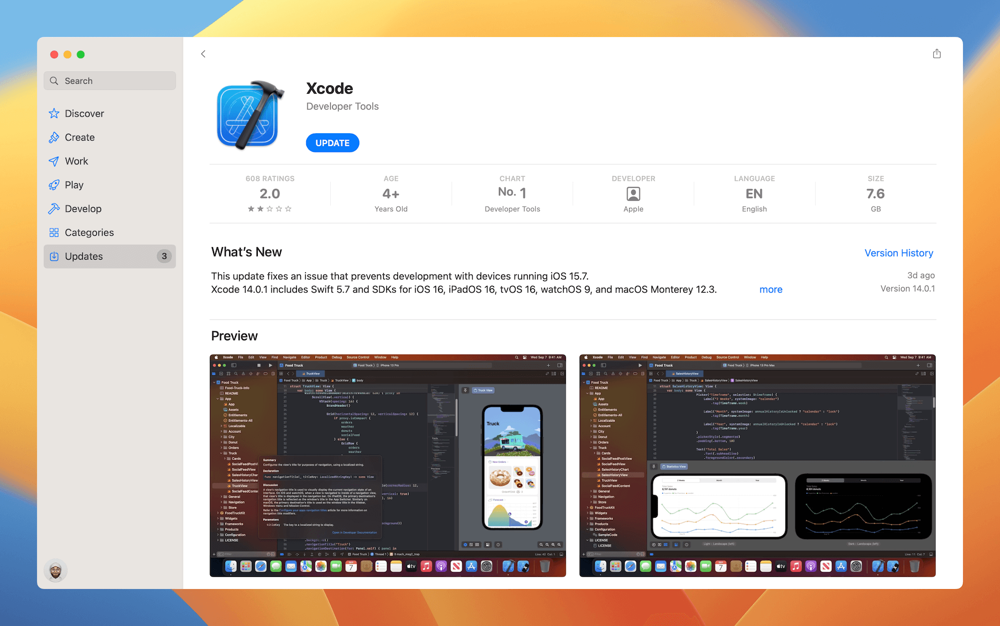

版权所有， 未经出版商书面许可，不得以任何方式使用，复制，存储或传播本书的任何内容。
AppCoda Limited 出版
坦白说，我没有预料到 Apple 在 WWDC 2019 中会有完全改变我们为 Apple 平台建立 UI 的方式的重大宣布。大概三年前， Apple 随着 Xcode 11 一起发布了一个名为“SwiftUI”的全新框架。 SwiftUI 的推出， 对于目前的 iOS 开发人员或即将学习打造 iOS App 的人而言，确实是一个重大的契机。毫无疑问的，这是近年来 iOS App 开发最大的改变。
我从事 iOS 程序开发已经超过 10 年了，已经习惯使用 UIKit 进行开发。我喜欢混合使用故事板与 Swift 代码来建立UI，但无论你是喜欢使用介面建构器还是完全使用代码来建立 UI，在 iOS 开发 UI 的方式并没有多大的变化，一切仍然依赖 UIKit 框架。
对我而言，SwiftUI 不仅是一个新框架，而是一个典范转移（paradigm shift ），从根本上改变你对 iOS 与其他Apple 平台的 UI 开发方式的看法。Apple 目前提倡使用声明式/ 函数式程序设计风格取代指令式程序设计风格，你不再确切指定 UI 组件的布局和功能，反而着重于描述在建立 UI 时所需要的元素，以及以声明式程序设计时应运行的操作。
如果你有实现过 React Native 或 Flutter 的经验，你会发现彼此之间的程序风格有些相似性，并且可能会发现以SwiftUI 来建立 UI 会更容易些。尽管如此，即使你之前没有使用任何函数式程序设计语言开发的经验，也只需要花费一些时间来习惯这些语法。当你具备了基础知识之后，你将会喜欢以 SwiftUI 来编写复杂布局与动画的简便性。今年，随着 Xcode 14 的发布，Apple 于 SwiftUI 框架中，加入了更多的功能与 UI 组件，着实将 iOS、iPad 与 macOS 的 UI 开发带入另一个阶段，你可以使用更少的代码来开发一些酷炫的动画，更重要的是，最新的框架可以让开发者开发适用Apple各式平台的 App，通过本书你将了解我所表述的内容。
SwiftUI 的发布并不表示介面建构器与 UIKit 会马上弃用，它们将继续存在许多年。不过，SwiftUI 是Apple 平台上应用程序开发的未来。为了始终走在技术创新的前端，是时候开始准备这个UI 开发的新方式，我希望本书可帮助你开始进行 SwiftUI 的开发，并建立一些令人耳目一新的UI。
Simon Ng
AppCoda 创办人
我们将会深入探讨 SwiftUI 框架，教你如何使用各种 UI 组件以及建立不同类型的 UI。有了基础知识，并了解这些通用组件的用法之后，我们会将你所学到的内容放在一起，你将学会如何建立一个完整的应用程序。
跟往常一样，我们将会使用“从做中学”的方式来探索 SwiftUI。这本新书集合了许多实现练习与项目，但不要认为只要阅读本书即可掌握全部，你需要做好撰写代码并除错的准备。
本书是为具有 iOS 程序设计的初学者与开发者所编写。即使你之前有过 iOS App 的开发经验，本书也将帮助你了解这个全新的框架以及开发 UI 的新方式，你还将学习如何以 SwiftUI 来整合 UIKit。
使用 Mac 电脑是 iOS 开发一个基本配备。要使用 SwiftUI，你的 Mac 电脑需要安装 macOS Catalina 与Xcode 11（或以上的版本），不过，为了跟着本书的内容来练习，您需要安装 Xcode 14 。
如果你是 iOS App 开发新手，Xcode 是一个由Apple 所提供的整合开发环境（IDE）。Xcode 提供所有 App 开发所需要的一切环境，它已经绑定最新版的 iOS SDK（Software Development Kit，软体开发套件），内建原始码编辑器、图形使用者介面（UI）编辑器、除错工具与其他更多的功能。最重要的是，Xcode 内建了iPhone（与iPad ）模拟器，让你可以不需要实机，也能测试你的 App。Xcode 14 可以让你即时预览 SwiftUI 代码的结果。
要安装 Xcode，请至 Mac App Store 下载它。只要搜寻“Xcode”，并点选“取得”按钮来下载。在本书撰写的期间，最新的 Xcode 版本是 14.0，完成安装之后，你会在 Launchpad 找到 Xcode。

当 SwiftUI 框架初次推出时，许多初学者向我询问问题。我想和你一同分享这些常见问题，并且希望这些答案可以让你对 SwiftUI 更加了解。
在学习 SwiftUI之前是否需要先学习 Swift？
是的，使用 SwiftUI 之前，你仍需要了解 Swift 程序语言的观念。SwiftUI 只是一个以 Swift 编写的UI框架。这里的关键字是 UI，表示此框架为了建立使用者介面而设计的。不过，对于一个完整的应用程序，除了 UI，还有许多其他组件，例如：连结远端服务器的网路组件、从内部数据库载入数据的数据组件、处理数据流程的商业逻辑组件（business logic component）等。所有这些组件都不是使用 SwiftUI 建立的。因此，你应了解Swift、SwiftUI以及其他内建的框架（如Map），才能建立一个 App。
我应要学习 SwiftUI 还是 UIKit ?
简短的回答是两者皆需要学习，不过这完全取决于你的目标而定。如果你打算成为一个专业的 iOS 开发者，并取得 iOS 开发的工作，则最好具备 SwiftUI 与 UIKit 的知识，在 App Store 发布的 App，有超过 90% 是使用UIKit 来建立。为了就业市场的考量，你需要熟悉UIKit，因为大部分的公司仍是使用这个框架来建立 App UI。不过，就像日新月异的技术发展，公司将在新项目中逐步采用 SwiftUI，这也是为何你需要学习这两种技术，以提升你的就业机会。
另一方面，如果你只想为个人使用或副项目开发 App，则你可以完全使用 SwiftUI 来开发。不过，由于SwiftUI 还非常新，目前尚未涵盖在UIKit 中可到的所有UI 组件。在某些情况下，你可能需要整合 UIKit 与SwiftUI。
我需要学习自动布局吗 ?
或许对你来说，这可能是一个好消息。许多初学者发现使用自动布局是一件苦差事。有了 SwiftUI，你不再需要定义布局约束条件，而是使用堆叠、留白与间距来进行布局。